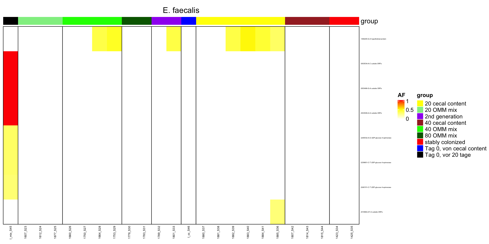

Section 4 AB Samples
4.1 Load in variants
vcfToDataframe <- function(vcf.files, contig_mapping = contig_mapping, gff.df = gff.df) {
require(vcfR)
res <- list()
for (file in vcf.files) {
library(data.table)
vcf.content <- vcfR::read.vcfR(file, verbose = FALSE)
vcf.fix <- as.data.frame(vcf.content@fix) # contains chr, position and substitution informations
vcf.info <- vcfR::INFO2df(vcf.content) # get INFO field, contains DP, AF informations
if (nrow(vcf.fix) > 0) {
# there are variants
dat <- as.data.frame(cbind(vcf.fix[, c(1, 2, 4, 5, 6)], vcf.info[, c(1, 2)]))
dat$majorAF <- sapply(dat$AF, minorAfToMajorAf) # transforms e.g. AF of 0.1 to 0.9, 0.9 stays 0.9 and 0.5 stays 0.5
dat$genome <- contig_mapping[match(dat$CHROM, contig_mapping$contig), ]$genome # map chr information to genome name e.g. NHMU01000001.1 -> i48
dat$genome_hr <- translateGenomeIdToFullName(tolower(dat$genome))
dat$mouse.id <- substr(tools::file_path_sans_ext(basename(file)), 1, 4)
dat$mouse.group <- translateMouseIdToTreatmentGroup(dat$mouse.id)
dat$day <- as.integer(substr(basename(file), 6, 7))
dat$phase <- binDaysByPhase(as.numeric(as.matrix(dat$day)))
dat$phase_num <- binDaysByPhaseGroup(dat$day)
dat$dp <- as.numeric(as.matrix(vcf.info$DP))
# annotate overlay of gene
dt.gff <- data.table(start = gff.df$start, end = gff.df$end, chr = as.character(as.matrix(gff.df$chr)), feature = gff.df$product)
colnames(dat)[1:2] <- c("chr", "start")
dat$start <- as.integer(as.matrix(dat$start))
dat$chr <- as.character(as.matrix(dat$chr))
dat$end <- dat$start
dat2 <- as.data.table(dat)
setkey(dt.gff, chr, start, end)
annotated <- foverlaps(dat2, dt.gff, type = "within", mult = "first")
res[[tools::file_path_sans_ext(basename(file))]] <- annotated # add vcf df to list
} else {
message("Skipping")
}
}
df <- as.data.frame(do.call(rbind, res)) # merge list to df
return(df)
}# load in reference information
gff.files <- Sys.glob("data/references/joined_reference_curated_ecoli/*.gff")
gff.df <- NULL
for (gff.file in gff.files) {
message(gff.file)
gff <- rtracklayer::readGFF(gff.file)
# subset since different columns are present on gff files
relevant <- data.frame(start = gff$start, end = gff$end, type = as.character(as.matrix(gff$type)), gene = as.character(as.matrix(gff$gene)), product = as.character(as.matrix(gff$product)),
chr = as.character(as.matrix(gff$seqid)))
relevant$genome <- substr(basename(gff.file), 1, nchar(basename(gff.file)) - 4)
gff.df <- rbind(gff.df, relevant)
}## data/references/joined_reference_curated_ecoli/joined_reference_curated_ecoli.gff# load in contig information
contig_mapping <- read.csv2("data/contig_mapping_new_ref.csv", sep = ";", header = T, stringsAsFactors = F) # this file contains contig names of the 12 OligoMM genomes
# load in vcf files
vcf.files <- Sys.glob("out_philipp/all_vcf/*.vcf")
vcf.samples <- suppressWarnings(vcfToDataframe(vcf.files, contig_mapping, gff.df = gff.df))## Skippingvcf.samples$feature <- as.character(as.matrix(vcf.samples$feature))
vcf.samples[which(is.na(vcf.samples$feature)), ]$feature <- "outside ORFs"
vcf.samples$start <- NULL
vcf.samples$end <- NULL
vcf.samples$i.end <- NULL
colnames(vcf.samples)[3] <- "POS"
saveRDS(vcf.samples, file = "data/rds/omm_ab.rds")4.2 AF frequency
p <- ggplot(vcf.samples, aes(AF, fill = genome)) + geom_histogram()
p <- p + facet_grid(mouse.id + mouse.group ~ genome + genome_hr)
p <- p + theme_classic() + xlab("AF") + ylab("occurence")
print(p)## `stat_bin()` using `bins = 30`. Pick better value with `binwidth`.
Figure 4.1: AF of resequenced strains
p <- ggplot(vcf.samples, aes(majorAF, fill = genome)) + geom_histogram()
p <- p + facet_grid(mouse.id + mouse.group ~ genome + genome_hr)
p <- p + theme_classic() + xlab("AF") + ylab("occurence")
print(p)## `stat_bin()` using `bins = 30`. Pick better value with `binwidth`.

Figure 4.2: major AF of resequenced strains
4.3 number of variants per samples
dat <- readRDS("data/rds/omm_ab.rds")
dat$dummy <- 1
dat.agg <- aggregate(dummy ~ mouse.id + mouse.group + day + phase, dat, sum)
DT::datatable(dat.agg)4.3.1 number of variants per treatment group
p <- ggplot(dat.agg, aes(x = mouse.id, y = dummy, color = day))
p <- p + geom_jitter(shape = 4) + facet_grid(. ~ mouse.group, scales = "free_x")
p <- p + geom_boxplot() + theme_classic() + xlab("Mouse ID") + ylab("number of variants")
plotly::ggplotly(p)Figure 4.3: number of variants of all 12 OMM genomes by mouse
4.4 Heatmap
All mice
```{r, fig.align=center, fig.width=5, fig.height=10}dat <- readRDS(data/rds/omm_ab.rds) dat\(sample.id <- paste0(dat\)mouse.id, -,dat\(day) dat\)variant.id <- paste0(dat\(POS, "-", dat\)REF, -, dat\(ALT) data.wide <- dcast(dat, variant.id ~ sample.id, value.var = "AF") data.wide[is.na(data.wide)] <- 0 rownames(data.wide) <- data.wide\)variant.id data.wide$variant.id <- NULL
library(circlize) library(ComplexHeatmap)
heat <- data.matrix(data.wide) # limit to variants that are present in at least 10% of samples heat_num <- rowSums(heat != 0) heat2 <- heat[which(heat_num > ncol(heat)/10),]